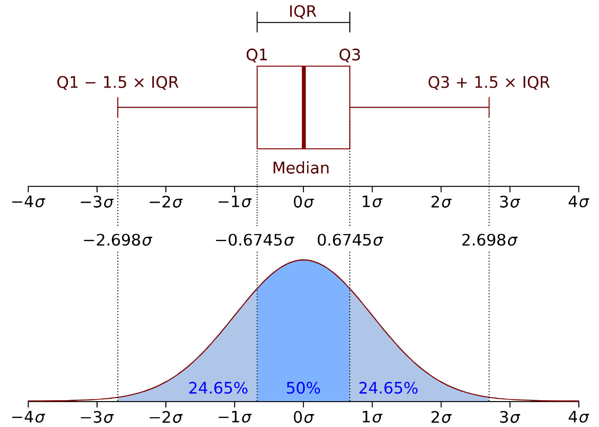

Probability Distributions
EES 4891/5891
Probability & Statistics for Geosciences
Jonathan Gilligan
Class #6: Thursday, January 23 2025
Learning Goals
Learning Goals
- Learn what probability distributions are
- Continuous and discrete distributions
- Learn how we characterize probability distributions
- Moments of a distribution
- Graphical summaries
- Learn the difference between exploratory and confirmatory data analysis
- Learn practices for avoiding mistakes in statistical analysis
- Learn about exploratory data analysis
- Robustness and Resiliance
- Learn about exploratory analysis of multivariate data
- Learn about pitfalls of relying too much on numerical summaries of statistical data
Homework
Homework
- I will post a homework assignment tomorrow
- It will cover data wrangling in R, focusing on selected exercises in R for Data Science.
- Start working on it before Tuesday, but it will not be due until the following week.
- Come to class Tuesday with questions about the exercises from the
reading for Tuesday (these will be clearly indicated in the assignment)
- We will discuss them and prepare you to compelete them after class.
- You do not need to do all the exercises in R for Data Science. Only the ones in the homework.
Probability Distributions
Probability Distributions
Discrete vs. Continuous
- Discrete:
- Examples:
- Counts: how many earthquakes happen in a year?
- Discrete outcomes: Dice rolls, mineral types
- Ranges: group grain sizes into ranges (Wentworth classes)
- Distribution:
- Probability Mass Function (PMF) \[P(X = x_i)\]
- Examples:
- Continuous:
- Examples:
- Weights
- Ages
- Temperatures
- Distributions:
- Probability Distribution Function (PDF): \[ P(X = x) \]
- Examples:
Discrete Probability Ranges
Probability Distributions
Discrete vs. Continuous
- Discrete:
- Probability Mass Function (PMF) \[P(X = x_i)\]
- Cumulative Distribution Function \[F(x) = P(X \le x) = \sum_{i=1}^N P(X = x_i),\] where \(x_i \le x\) for \(i = 1, \ldots, N\)
- Survival Function \[P(X > x) = 1 - F(x)\]
- Contiunous:
- Probability Distribution Function (PDF): \[ P(X = x) \]
- Cumulative Distribution Function \[F(x) = P(X \le x) = \int_{z=-\infty}^x P(X = z) dz\]
- Survival Function \[P(X > x) = 1 - F(x)\]
Empirical Probability Distributions
Empirical Probability Distributions
- Discrete PMF:
- Histograms
- Continuous PDF:
- Kernel-Density Estimation (KDE)
- You choose the kernel function and the
bandwidth.
- It’s usually fine to just use the defaults for the KDE function
- There’s not much difference
- But you may want to manually adjust the bandwidth if your data set is unusual.
- It’s usually fine to just use the defaults for the KDE function
- You choose the kernel function and the
bandwidth.
- The figure shows four different kernel density estimates for the data, and they are all almost identical.
- Kernel-Density Estimation (KDE)
Describing an Empirical Distribution
- Quantiles and Percentiles
- A quantile describes a value of \(x\) such that a certain fraction of the
data \(x_i\) are less than \(x\)
- median: what value has exactly 50% of the points below it?
- quartiles: what values of \(x\) have exactly 25%, 50%, and 75% of the data below them?
- deciles: 10%, 20%, … 90%
- percentiles: 1%, 2%, …, 98%, 99%
- A quantile describes a value of \(x\) such that a certain fraction of the
data \(x_i\) are less than \(x\)
Parametric Distributions
- Functions like the normal distribution, which are defined by
parameters (mean, standard deviation), which we try to estimate from the
data.
- We’ll look at this in more detail in Chapter 5
Moments of a Distribution
Moments of a Distribution
-
Expected Value: On average, what value do we expect?
\[ E(X) = \mu = \begin{cases} \sum_{i = 1}^N x_i P(X = x_i) & \text{Discrete}\\ \int_{-\infty}^{\infty} x P(x) dx & \text{Continuous} \end{cases} \]
- This is the first moment of \(P\), and it’s equivalent to the mean of \(P\).
-
Higher moments:
- The second moment is the variance of \(P\)
- The third moment is related to the skewness, or asymmetry, of \(P\)
- The fourth moment is related to the kurtosis, or how sharply peaked, versus spread out, \(P\) is.
- The textbook gives the mathematical formulas for a generic \(n\)-th order moment
- If you know all the moments (up to \(n = \infty\)), you know everything about \(P\).
Practical Application: Climate Change
Caution
- Francis J. Anscombe data sets:
- 4 sets of 11 data points in \(x\) and \(y\)
- Identical means and standard deviations
| set | mean_x | mean_y | sd_x | sd_y |
|---|---|---|---|---|
| 1 | 9 | 7.501 | 3.317 | 2.032 |
| 2 | 9 | 7.501 | 3.317 | 2.032 |
| 3 | 9 | 7.500 | 3.317 | 2.030 |
| 4 | 9 | 7.501 | 3.317 | 2.031 |
Exploratory Data Analysis
Data Analysis
- Exploratory data analysis: examines data to try to find patterns and develop hypotheses about it.
- Confirmatory data analysis: examines data to test previously developed hypotheses.
- Scientific Process:
- If you use the same data for exploratory and
confirmatory analysis, you are likely to fool yourself and make
errors.
- Overfitting data: Your data may not be perfectly representative of all possible measurements. the hypothesis that best describes your data may not describe newer data very well.
- It’s important to test hypotheses with different, independent data to the data you used to generate the hypothesis.
- If you use the same data for exploratory and
confirmatory analysis, you are likely to fool yourself and make
errors.
Avoiding Mistakes in Exploratory Analysis
- For exploratory analysis, we want to use methods that
are robust and resistant
- robust methods are not sensitive to assumptions about the data (e.g., assuming the data are normally distributed)
-
resistant methods are not sensitive to small
numbers of unsual observations (outliers).
- If there are 100 ordinary people in a coffee shop, and Elon Musk
walks in, suddenly the mean wealth of people in the coffee shop
is several billion dollars.
- But the median wealth doesn’t change very much
- The median is much more resistant than the mean for describing average properties of observations
- If there are 100 ordinary people in a coffee shop, and Elon Musk
walks in, suddenly the mean wealth of people in the coffee shop
is several billion dollars.
Numerical Summaries
- Range: difference between largest and smallest
-
Location:
- mean
- median: If the mean and median are different, the distribution must have skewness
- Other measures trimean, trimmed mean are rarely used
Numerical Summaries
-
Spread:
-
standard deviation \[s = \sqrt{
E( (X - E(X))^2 ) } = \sqrt{ E( (X - \text{mean})^2 )}\]
- Not very reistant
- The variance \(v = s^2\)
-
interquartile range \(\text{IQR}
= q_{0.75} - q_{0.25}\) is much more resistant than
standard deviation
- Difference between 1st and 3rd quartiles (25th and 75th percentiles)
- mean absolute deviation MAD is also resisant. \[\text{MAD} = E( | X - q_{0.50} | ) = E( | X - \text{median} | )\]
-
standard deviation \[s = \sqrt{
E( (X - E(X))^2 ) } = \sqrt{ E( (X - \text{mean})^2 )}\]
Examples:
- Mean:
mean(data)= -0.049 - Median:
median(data)= 0.028 - Standard deviation:
sd(data)= 1.737 - Interquartile range:
IQR(data)= 2.398 - Mean absolute deviation:
mad(data)= 1.896
Example (cont.)
Graphical Summaries

Multivariate Data
Multivariate Data
So far we’ve looked at observations of one variable at a time.
What do we do if we measure several variables for each observation?
-
Covariance:
\[ \begin{aligned} \text{Cov}(X, Y) &= E(\;(X - E(X))\; (Y - E(Y))\;) \\ &= E(XY) - E(X)E(Y) \end{aligned} \]
If there is no relationship between \(X\) and \(Y\), \(\text{Cov}(X,Y) = 0\)
-
Standardized data: mean = 0, sd = 1
\[ X_{\text{std}} = \frac{X - E(X)}{\sigma_X} \]
-
Correlation coefficient \(\rho\) is the covariance of standardized variables
\[ \rho_{XY} = \text{Cov}( X_{\text{std}}, Y_{\text{std}} ) \]
Correlation
- \(\rho_{XY} = 0\): There is no relationshp between \(X\) and \(Y\)
- \(|\rho_{XY}| > 0\): The value of \(X\) tells us something about \(Y\)
- \(|\rho_{XY}| = 1\): The values of \(X\) and \(Y\) lie exactly on a line
Caution
- Anscombe data
| set | mean_x | mean_y | sd_x | sd_y | cor |
|---|---|---|---|---|---|
| 1 | 9 | 7.501 | 3.317 | 2.032 | 0.816 |
| 2 | 9 | 7.501 | 3.317 | 2.032 | 0.816 |
| 3 | 9 | 7.500 | 3.317 | 2.030 | 0.816 |
| 4 | 9 | 7.501 | 3.317 | 2.031 | 0.817 |

More Fun with Correlations
- “Datasaurus” data set
| dataset | mean_x | mean_y | sd_x | sd_y | cor |
|---|---|---|---|---|---|
| dino | 54.263 | 47.832 | 16.765 | 26.935 | -0.064 |
| away | 54.266 | 47.835 | 16.770 | 26.940 | -0.064 |
| h_lines | 54.261 | 47.830 | 16.766 | 26.940 | -0.062 |
| v_lines | 54.270 | 47.837 | 16.770 | 26.938 | -0.069 |
| x_shape | 54.260 | 47.840 | 16.770 | 26.930 | -0.066 |
| star | 54.267 | 47.840 | 16.769 | 26.930 | -0.063 |
| high_lines | 54.269 | 47.835 | 16.767 | 26.940 | -0.069 |
| dots | 54.260 | 47.840 | 16.768 | 26.930 | -0.060 |
| circle | 54.267 | 47.838 | 16.760 | 26.930 | -0.068 |
| bullseye | 54.269 | 47.831 | 16.769 | 26.936 | -0.069 |
| slant_up | 54.266 | 47.831 | 16.769 | 26.939 | -0.069 |
| slant_down | 54.268 | 47.836 | 16.767 | 26.936 | -0.069 |
| wide_lines | 54.267 | 47.832 | 16.770 | 26.938 | -0.067 |
Lesson
- Numerical summaries are useful, but limited
- Summary graphs are better, but still limited
- Always plot your data
Bivariate Plots
Scatterplots
- Old Faithful geyser in Yellowstone National Park is known for
regular eruptions.
- Plot the eruption duration versus the waiting time between eruptions

Bivariate Histograms


Bonus: How to Make the Plots
Scatterplot
p = ggplot(faithful,
aes(x = waiting,
y = eruptions)) +
geom_contour_filled(data = faithfuld,
aes(z = density),
alpha = 0.3) +
geom_point(color = "darkgreen") +
guides(fill = "none") +
labs(x = "waiting time (minutes)",
y = "eruption duration (minutes)") +
theme_bw(base_size = 20)
pm = ggMarginal(p, type = "density",
color = "purple",
fill = "purple",
alpha = 0.3)
pmHexagon Plot
p2 = ggplot(faithful,
aes(x = waiting,
y = eruptions)) +
geom_point(alpha = 0) +
geom_hex(bins = 20) +
scale_fill_distiller(palette = "Greens",
direction = 1) +
guides(fill = "none") +
labs(x = "waiting time (minutes)",
y = "eruption duration (minutes)") +
theme_bw(base_size = 20)
p2m = ggMarginal(p2,
type = "histogram",
bins = 20,
color = "darkgreen",
fill = "darkgreen",
alpha = 0.3)
p2m